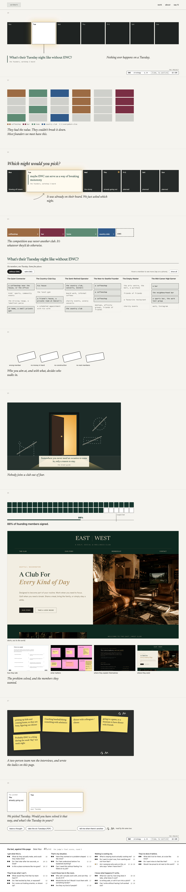
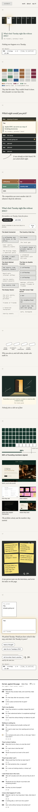
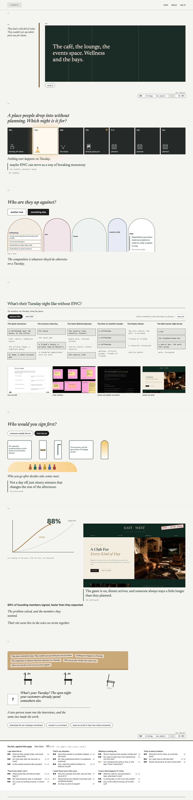
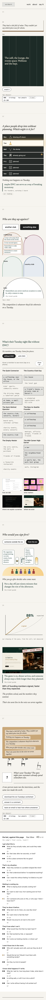
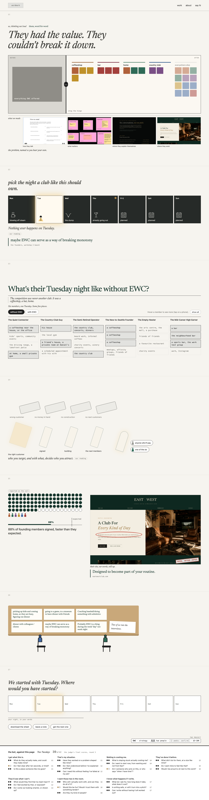
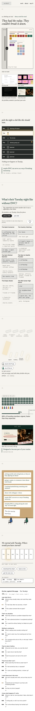
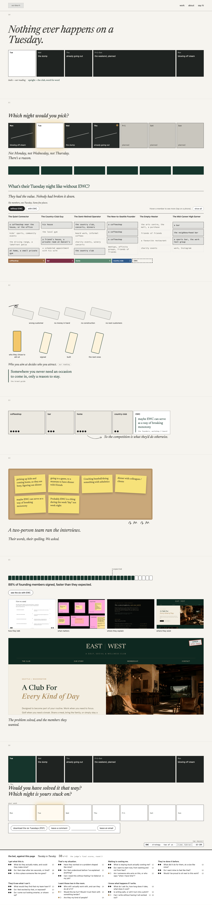
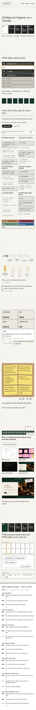

Study 84 · 6 November 2026 · Kahran
EWC, the case study, four ways after three judged rounds
Five concepts were written against all 21 of Kahran's bet answers, judged question by question, sent back and judged again, three rounds. These are the top four, built whole: every section drawn, few words, the two voices (italic is ours, upright is the club's, word for word). Under each page, the bet against that page: every question, the judge's final score, and the section that answers it.
"You took a lot of ideas and distilled it down to not very many insights... if you did the analysis again you wouldn't see that I answered every single question."
Kahran, 6 Nov, on Study 83.a · Sotto Voce
41 of 42 · fidelity 10 · visual 8
Two registers, like the deck: upright is the club's voice, a narrow italic margin is ours. A picture per section (the empty Tuesday, the value splitting into six, the door ajar, the seats passing "expected", the founders' own stickies), one upright line and one italic aside at most. It asks which night you would pick, and at the end hands your pick back and asks about yours.
Judge: strongest on fidelity; every idea of his is on the page. Would merge the places bar into §1, lighten §6, and let the dominoes resolve. The board is typeset here, not an export, for the public repo.


b · Your Move
40 of 42 · fidelity 9 · visual 8
A short game in three moves: pick a night, say who the competition is, choose who to sign first. Each time the reader decides before the reveal. The italic margin is drawn as the edge of the workshop table; at the end it bends into the table, and a third chair is pulled out for the reader to type their own Tuesday.
Judge: the best answer to "the case study as a conversation", and the third chair is the best "my kind of people". Three quizzes plus the close is one ask too many; §5 is the wordiest section of the four pages.


c · Two Tuesdays
39 of 42 · fidelity 8 · visual 9
The same Tuesday twice, before and after. A hinge you drag splits the slab of everything the club offered into the wants it holds, by the places they replace. You choose who goes on the first domino. 88 of 100 seats pass "expected"; the live site, ringed where its own line sits, stamped "open, after Joyus".
Judge: the strongest visuals. Its one rule break (a line that traces only to Study 83) is fixed here with the founders' own answers from Study 46. Still open: the first screen holds a lot; the closing question is ours, not his phrasing.


d · Tuesday to Tuesday
38 of 42 · fidelity 9 · visual 8
One week, from a Tuesday with nothing in it to the next one, with the club in it. It opens on the week (each night's job, Tuesday open), asks which night you would pick, strikes through Monday, Wednesday and Thursday, and closes on the same strip with Tuesday filled, asking whether you would have solved it that way.
Judge: the cleanest, least wordy page. Its bug: the first strip already labels every night, so the answer comes before the question. Built as written, so you can see it.


Every string has a data-copy id in copy.json; ours are in words.json, the scores and sections in concepts.json, then build.cjs. The thumbnails of the work come from sources.mjs.